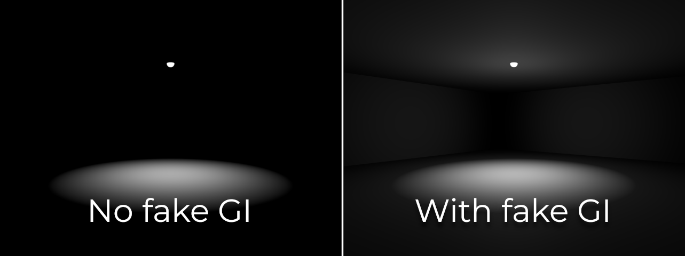

Faking global illumination
Why fake global illumination?
Godot provides several global illumination (GI) techniques, all with their advantages and drawbacks. Nonetheless, it remains possible to avoid using any GI technique and use a handmade approach instead. There are a few reasons for using a "handmade" approach to global illumination instead of VoxelGI, SDFGI or baked lightmaps:
You need to have good rendering performance, but can't afford going through a potentially cumbersome lightmap baking process.
You need an approach to GI that is fully real-time and works in procedurally generated levels.
You need an approach to GI that is fully real-time and does not suffer from significant light leaks.
The approaches described below only cover indirect diffuse lighting, not specular lighting. For specular lighting, consider using ReflectionProbes which are usually cheap enough to be used in conjunction with this fake GI approach.
See also
Not sure if faking global illumination with lights is suited to your needs? See Which global illumination technique should I use? for a comparison of GI techniques available in Godot 4.
Faking DirectionalLight3D global illumination
While the sky provides its own directional lighting, the scene's main DirectionalLight3D node typically emits a large amount of light. When using a GI technique, this light would be reflected on solid surfaces and would bounce back on most outdoors shaded surfaces.
We can fake this by adding a second DirectionalLight3D node with the following changes:
Rotate the light by 180 degrees. This allows it to represent lighting bounced by the main DirectionalLight3D node.
Set Shadows to Off. This reduces the secondary light's performance burden while also allowing shaded areas to receive some lighting (which is what we want here).
Set Energy to 10-40% of the original value. There is no "perfect" value, so experiment with various energy values depending on the light and your typical material colors.
Set Specular to
0.0. Indirect lighting shouldn't emit visible specular lobes, so we need to disable specular lighting entirely for the secondary light.
Note
This approach works best in scenes that are mostly outdoors. When going indoors, the secondary DirectionalLight3D's light will still be visible as this light has shadows disabled.
This can be worked around by smoothly decreasing the secondary DirectionalLight3D's energy when entering an indoor area (and doing the opposite when leaving the indoor area). For instance, this can be achieved using an Area3D node and AnimationPlayer.
Faking positional light global illumination
It's possible to follow the same approach as DirectionalLight3D for positional lights (OmniLight3D and SpotLight3D). However, this will require more manual work as this operation needs to be repeated for every positional light node in the scene to look good.
In an ideal scenario, additional OmniLight3Ds should be added at every location where a significant amount of light hits a bright enough surface. However, due to time constraints, this isn't always easily feasible (especially when performing procedural level generation).
If you're in a hurry, you can place a secondary OmniLight3D node at the same position as the main OmniLight3D node. You can add this node as a child of the main OmniLight3D node to make it easy to move and hide both nodes at the same time.
In the secondary OmniLight3D node, perform the following changes:
Increase the light's Range by 25-50%. This allows the secondary light to lighten what was previously not lit by the original light.
Set Shadows to Off. This reduces the secondary light's performance burden while also allowing shaded areas to receive some lighting (which is what we want here).
Set Energy to 10-40% of the original value. There is no "perfect" value, so experiment with various energy values depending on the light and its surroundings.
Set Specular to 0. Indirect lighting shouldn't emit visible specular lobes, so we need to disable specular lighting entirely for the secondary light.
For SpotLight3D, the same trick can be used. In this case, the secondary OmniLight3D should be placed in a way that reflects where most light will be bounced. This is usually close to the SpotLight3D's primary impact location.
In the example below, a SpotLight3D node is used to light up the room's floor. However, since there is no indirect lighting, the rest of the room remains entirely dark. In real life, the room's walls and ceiling would be lit up by light bouncing around. Using an OmniLight3D node positioned between the SpotLight3D's origin and the floor allows simulating this effect:
